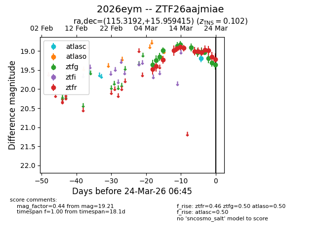
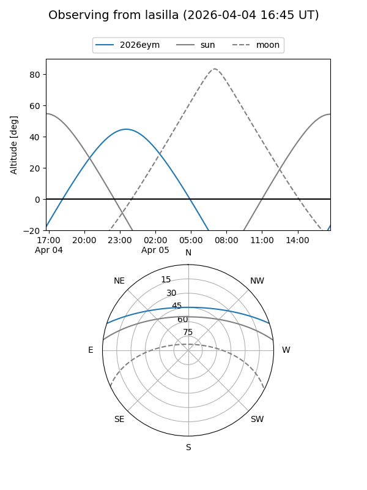
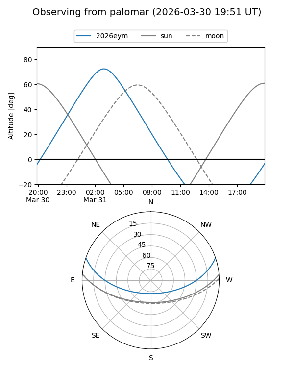
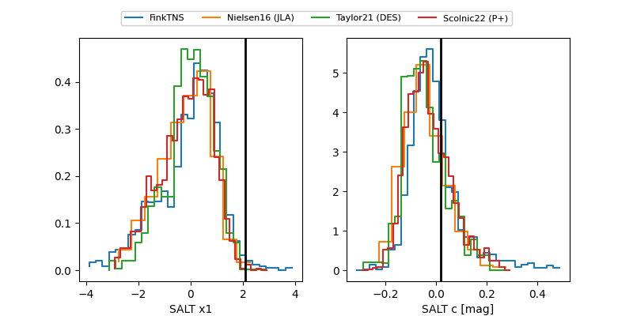

2026eym
Target 2026eym at 2026-03-24 06:48
Aliases and brokers:
FINK: link
Lasair: link
ALeRCE: link
TNS: link
YSE: link
alt names
ZTF26aajmiae (ztf,fink_ztf)
2026eym (tns,yse)
Coordinates:
equatorial (ra, dec) = 115.3192,+15.95942
equatorial (HMS+DMS) = 07:41:16.61,+15:57:33.89
galactic (l, b) = (203.8470,+18.05878)
Flags:
confirmed ia
Photometry:
last atlasc=19.19, atlaso=nan, ztfg=19.36, ztfr=19.21
1 atlasc, 1 atlaso, 13 ztfg, 14 ztfr detections
Lightcurve

Visibility


Additional plots
